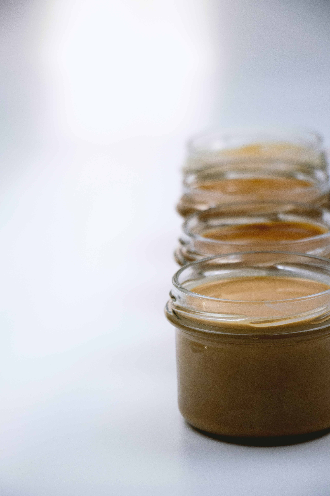

Nut Butter

Enjoying sweet treats doesn't have to come with guilt! Our nut butters are packed with health benefits, allowing you to indulge while nourishing your body. We carefully craft flavors that satisfy your sweet tooth without compromising your health, so you can treat yourself and feel great about it!
Download the Menu
Cinnamon Roll Nut Butter
Almonds are packed with vitamin E, magnesium, and healthy fats that help keep your heart and brain in good shape. They’re also full of antioxidants that reduce inflammation and protect your body from damage. Eating almonds regularly can help control blood sugar and support healthy weight management.
Buy Some!
Hazelnut Butter
Hazelnuts are packed with healthy fats, fiber, and essential vitamins like Vitamin E. They're known to support heart health, improve skin elasticity, and provide a boost of antioxidants that help combat oxidative stress. Plus, their natural sweetness makes for a delicious and nutritious treat!
Buy Some!
Peanut Butter Cup
Peanut butter benefits: Peanuts are rich in heart-healthy fats, protein, and essential vitamins like vitamin E and B-vitamins, supporting overall health. They also contain antioxidants and magnesium, which help reduce inflammation and lower the risk of heart disease. Enjoying peanut butter can boost energy and promote healthy cholesterol levels.
Buy Some!
Pumpkin Pie Nut Butter*
But wait! Our pumpkin pie nut butter is made with cashews. Cashews are rich in healthy fats, protein, and important minerals like magnesium and zinc, which help boost energy and support bone health. They also contain antioxidants that reduce inflammation and improve heart health. Adding cashews to your diet can support healthy brain function and improve overall wellness.
Buy Some!
Pumpkin Seed Butter
Pumpkin seeds are loaded with nutrients like magnesium, zinc, and healthy fats, which support heart health, immune function, and energy levels. They're also rich in antioxidants that help reduce inflammation and protect your body from damage. Including pumpkin seeds in your diet can promote better sleep, boost mood, and support overall wellness.
Buy Some!